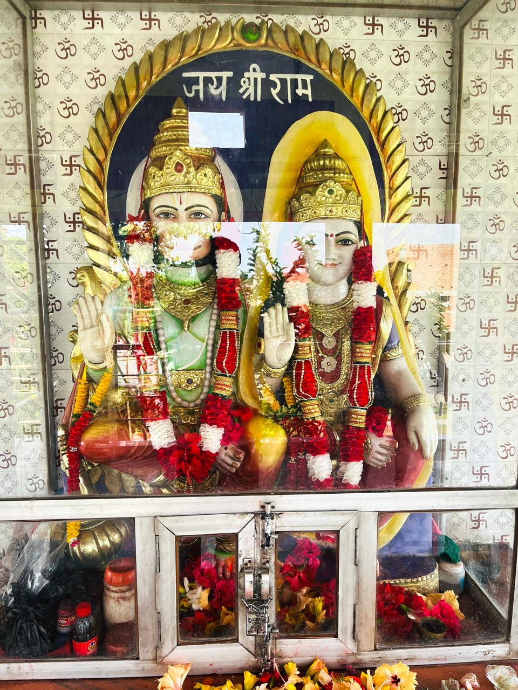

श्री महाबली हनुमान जी मंदिर, ग्राम जगिराहा, जिला पूर्वी चंपारण (बिहार) में स्थित एक पवित्र धार्मिक स्थल है। यह मंदिर श्रद्धालुओं की आस्था का प्रमुख केंद्र है, जहाँ प्रतिदिन बड़ी संख्या में भक्त भगवान श्री हनुमान जी के दर्शन और पूजा के लिए आते हैं।
यह मंदिर भक्तों के लिए श्रद्धा, भक्ति और सेवा का प्रतीक है। मंगलवार और शनिवार को विशेष पूजा-अर्चना की जाती है। हनुमान जयंती सहित विभिन्न धार्मिक अवसरों पर यहाँ विशेष आयोजन एवं भंडारे का आयोजन होता है।
इस वेबसाइट का उद्देश्य मंदिर की जानकारी देश-विदेश में रहने वाले श्रद्धालुओं तक पहुँचाना, धार्मिक कार्यक्रमों की सूचना देना तथा मंदिर की संस्कृति और परंपरा को डिजिटल माध्यम से आगे बढ़ाना है।

श्री हनुमान जी एवं माता सुवर्चला जी
पराशर संहिता के अनुसार — सूर्यदेव के तेज (प्रकाश) का एक भाग इतना प्रचंड था कि संसार उसे सहन नहीं कर सकता था। तब उस दिव्य तेज से एक कन्या उत्पन्न हुई, जिनका नाम रखा गया सुवर्चला।
"सु" = उत्तम, "वर्चस्" = तेज → अर्थात् अत्यन्त तेजस्विनी देवी। उन्हें सूर्यदेव की पुत्री माना जाता है।
हनुमान जी ने बचपन में सूर्य को फल समझकर निगलने की कोशिश की थी। बाद में उन्होंने सूर्यदेव को अपना गुरु बनाया और उनके साथ चलते हुए समस्त विद्याएँ प्राप्त कीं।
हनुमान जी ने लगभग सभी विद्याएँ सीख ली थीं, लेकिन नव व्याकरण की अंतिम शिक्षा केवल गृहस्थ (विवाहित) व्यक्ति को दी जा सकती थी।
सूर्यदेव ने समाधान दिया कि उनकी पुत्री सुवर्चला भी आजीवन ब्रह्मचारिणी रहेंगी। केवल धर्म की पूर्ति के लिए विवाह होगा, जिससे हनुमान जी का ब्रह्मचर्य भी अक्षुण्ण रहेगा।